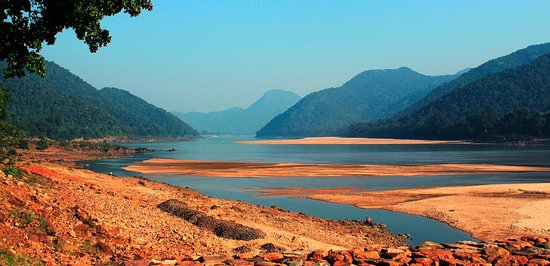

The District of Angul situated at the heart of Odisha was a part of Undivided Dhenkanal District till early March 1993, but for the administrative convenience, Dhenkanal District was divided into two parts i.e. Dhenkanal and Angul vide State Government Notification No. DRC-44/93/14218/R. dated 27 March 1993. Angul District came into existence as a separate District on April 1, 1993. The District is surrounded by Cuttack & Dhenkanal on the east, Sambalpur & Deogarh on the west, Sundargarh & Keonjhar on the north and Phulbani on the south. Covering an area of 6232 sq.km, Angul District is located at Latitude 20.50 North to 85.00 East Longitude.The altitude of this place is 564 to 1187 mts.
Angul District is densely populated as per the 2011 census.The District has 1930 villages having 1273821 population. Total population comprises of 655718 male population and 618103 female population. District‘s rural population is more compared to its urban population, as is the case in almost all other Districts of the state. Total rural population of the District is 1067275 while total urban population is 206546. as per 2011 census. The District has 239552 SC and 179603 ST population.

The last decade has witnessed a tremendous improvement in the industrial scenario of Angul District.Many public sector undertakings have setup up plants and offices here, like National Aluminium Company Limited (NALCO), Mahanadi Coal Fields Limited (MCL), National Thermal Power Corporation (NTPC) and Talcher Thermal Power Station (TTPS). One of the major coalfields is the Talcher coalfield, which contains huge reserves of power grade non-coking coal. Engineering Units, Rice Mills, Hotels, Fly Ash Brick units, Stone Crushers, Service Units, Bleaching units, Bread and Bakery units, Tyre Retreading units, Flour Mills and Spices Grinding units etc. are some of the small scale industries functioning here.
Dhokra casting works, Terracotta works, Wood carvings, Art textiles and Soft toys etc are some examples of the crafts that have been generating revenues for this District. The District Industries Center functioning in the District promotes its various industrial activities.
The Angul District is having 4,09.260 male literates and 2,62,173 female literates. As per educational institutes are concerned Angul District has many Government and Private Institutes. Government College (Angul), Angul Women‘s College (Angul) and Talcher College (Talcher) are the important educational institutions of the District. There are other training institutes of the District, like Police Training College (PTC) Angul, Forest Rangers College Angul and a number of industrial training institutes providing quality technical education to a vast number of students of the District. Different educational programmes like Sarva Sikhya Aviyan, Total Literacy Campaign, Post Literacy Campaign, Continuing Education Programme and National Child Labour Project have been initiated by the Government with an objective of reaching education to all, including those unprivileged ones for whom education is still out of bounds and reach.
Angul District is very much rich in its fairs and festivals. Laxmi Puja is celebrated in the city of Angul. The celebration starts from Kumar Purnima and continues for long 11 days. Ganesh Puja of Talcher is one of the most famous festivals celebrated in the District. Amb Nua (fresh mango eating), Raja, Gammha Purnima, and Push Punei are functions celebrated by the people with much enthusiasm. The number of fairs and festivals observed in the District showcase its varied culture vividly.